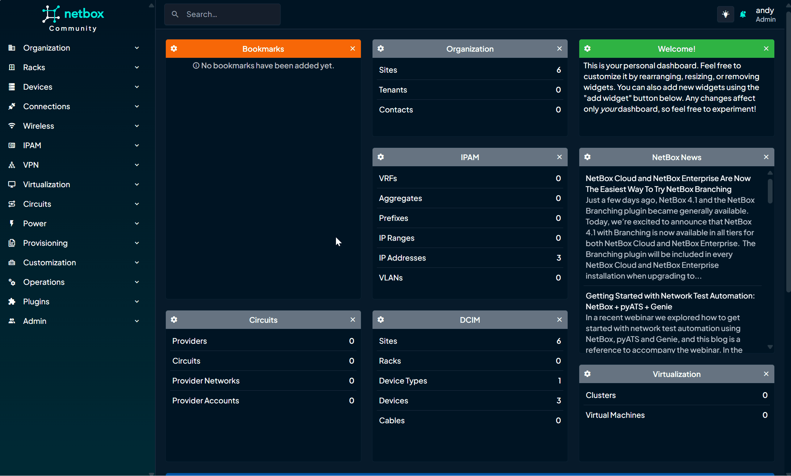
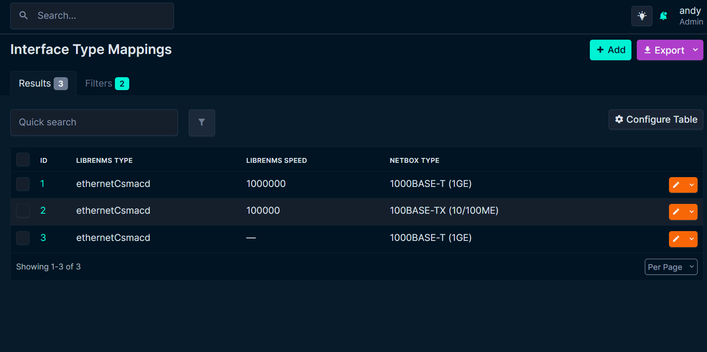

Home
NetBox LibreNMS Plugin¶
Intro¶
The NetBox LibreNMS Plugin enables integration between NetBox and LibreNMS, allowing you to leverage data from both systems. NetBox remains the Source of Truth (SoT) for you network, but this plugin allows you to easily onboard device objects from existing data in LibreNMS. The plugin does not automatically create objects in NetBox to ensure only verified data is used to populate NetBox.
Features¶
The plugin offers the following key features:
Device Import¶
Search and import devices from LibreNMS into NetBox with comprehensive validation and control:
- Filter devices by location, type, OS, hostname, system name, or hardware model
- Validate import prerequisites (Site, Device Type, Device Role)
- Smart matching for Sites, Device Types, and Platforms
- Import as physical Devices or Virtual Machines
- Bulk import multiple devices
- Automatic Virtual Chassis creation for stackable switches
- Background job processing for large device sets
See the Device Import Guide for detailed usage instructions.
Device Field Sync¶
Synchronize device information from LibreNMS to NetBox. The following device fields can be synchronized:
- Serial Number (including virtual chassis members)
- Device Type
- Platform
Interface Sync¶
Pull interface data from Devices and Virtual Machines from LibreNMS into NetBox. The following interface attributes are synchronized:
- Name
- Description
- Status (Enabled/Disabled)
- Type (with custom mapping support)
- Speed
- MTU
- MAC Address
Set custom mappings for interface types to ensure that the correct interface type is used when syncing from LibreNMS to NetBox.
Cable Sync¶
Create cable connection in NetBox from LibreNMS links data.
IP Address Sync¶
Create IP address in NetBox from LibreNMS device IP data.
Add device to LibreNMS from Netbox¶
- Add device to LibreNMS from Netbox device page. SNMP v2c and v3 are supported.
Site & Location Sync¶
The plugin also supports synchronizing NetBox Sites with LibreNMS locations:
- Compare NetBox sites to LibreNMS location data
- Create LibreNMS locations to match NetBox sites
- Update existing LibreNMS locations latitude and longitude values based on NetBox data ⚠️ (currently not working due to LibreNMS API issue)
- Sync device site to LibreNMS location
Screnshots/GIFs¶
Screenshots from older plugin version
Site & Location Sync¶

Sync devices and Interfaces¶
Virtual Chassis Member Select¶

Interface Type Mappings¶

Contributing¶
There's more to do! Coding is not my day job so bugs will exist and imporvements will be needed. Contributions are very welcome! I've got more ideas for new features and imporvements but please contribute if you can!
Or just share your ideas for the plugin over in discussions.
Compatibility¶
| NetBox Version | Plugin Version |
|---|---|
| 4.1 | 0.2.x - 0.3.5 |
| 4.2 - 4.4 | 0.3.6+ |
Installing¶
Standard Installation¶
Activate your virtual environment and install the plugin:
source /opt/netbox/venv/bin/activate
Install with pip:
(venv) $ pip install netbox-librenms-plugin
Add to your local_requirements.txt to ensure it is automatically reinstalled durintg future upgrades.
"netbox-librenms-plugin" >> /opt/netbox/netbox/local_requirements.txt
Docker¶
For adding to a NetBox Docker setup see how to create a custom Docker image. the general instructions for using netbox-docker with plugins.
Add the plugin to plugin_requirements.txt (netbox-docker):
# plugin_requirements.txt
netbox-librenms-plugin
Configuration¶
1. Enable the Plugin¶
Enable the plugin in /opt/netbox/netbox/netbox/configuration.py, or if you use netbox-docker, your /configuration/plugins.py file :
PLUGINS = [
'netbox_librenms_plugin'
]
2. Apply the plugin configuration¶
Multi server example:
PLUGINS_CONFIG = {
'netbox_librenms_plugin': {
'servers': {
'production': {
'display_name': 'Production LibreNMS',
'librenms_url': 'https://librenms-prod.example.com',
'api_token': 'your_production_token',
'cache_timeout': 300,
'verify_ssl': True,
'interface_name_field': 'ifDescr'
},
'testing': {
'display_name': 'Test LibreNMS',
'librenms_url': 'https://librenms-test.example.com',
'api_token': 'your_test_token',
'cache_timeout': 300,
'verify_ssl': False,
'interface_name_field': 'ifName'
},
'development': {
'display_name': 'Dev LibreNMS',
'librenms_url': 'https://librenms-dev.example.com',
'api_token': 'your_dev_token',
'cache_timeout': 180,
'verify_ssl': False,
'interface_name_field': 'ifDescr'
}
}
}
}
Or use the original single server confiig example:
PLUGINS_CONFIG = {
'netbox_librenms_plugin': {
'librenms_url': 'https://your-librenms-instance.com',
'api_token': 'your_librenms_api_token',
'cache_timeout': 300,
'verify_ssl': True, # Optional: Change to False if needed,
'interface_name_field': 'ifDescr', # Optional: LibreNMS field used for interface name. ifName used as default
}
}
3. Apply Database Migrations¶
Apply database migrations with Netbox manage.py:
(venv) $ python manage.py migrate
4. Collect Static Files¶
The plugin includes static files that need to be collected by NetBox. Run the following command to collect static files:
(venv) $ python manage.py collectstatic --no-input
5. Restart Netbox¶
Restart the Netbox service to apply changes:
sudo systemctl restart netbox
6. Custom Field¶
It is recommended (but not essential) to add a custom field librenms_id to the Device, Virtual Machine and Interface models in NetBox. Use the following settings:
- Object Types:
- Check dcim > device
- Check virtualization > virtual machine
- Check dcim > interface
- Check virtualization > interfaces (optional)
- Name:
librenms_id - Label:
LibreNMS ID - Description: (Optional) Add a description like "LibreNMS ID for LibreNMS Plugin".
- Type: Integer
- Required: Leave unchecked.
- Default Value: Leave blank.
For more info check out custom field docs
Update¶
source /opt/netbox/venv/bin/activate
pip install -U netbox-librenms-plugin
python manage.py migrate
python manage.py collectstatic --no-input
systemctl restart netbox
Uninstall¶
See the instructions for uninstalling plugins.
Credits¶
Based on the NetBox plugin tutorial and docs:
This package was created with Cookiecutter. Thanks to the netbox-community/cookiecutter-netbox-plugin for the project template.